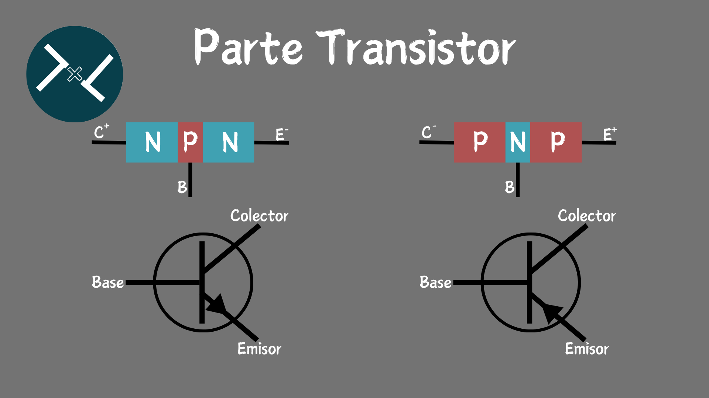

La Historia de los Transistores
Su historia se remonta a la década de 1940, cuando un equipo de científicos de los Laboratorios Bell inventó el primer transistor de contacto, que consistía en dos electrodos metálicos sobre un cristal de germanio. Este invento les valió el Premio Nobel de Física en 1956 a John Bardeen, Walter Houser Brattain y William Bradford Shockley. El nombre de transistor fue propuesto por el ingeniero John R. Pierce, a partir de las palabras transfer y resistor. El transistor fue una revolución tecnológica que permitió reemplazar a las válvulas o tubos de vacío, que eran más grandes, consumían más energía y se desgastaban más rápido. El transistor también abrió las puertas al desarrollo de los circuitos integrados, los microprocesadores y la miniaturización de los dispositivos electrónicos.
¿Que son los Transistores?
Los transistores son dispositivos electrónicos que pueden modificar o controlar una señal eléctrica de salida en función de una señal eléctrica de entrada
Los transistores son dispositivos electrónicos que permiten amplificar, rectificar o conmutar señales eléctricas. Son la base de la electrónica moderna y de la computación.
¿Para Que sirven los Transistores?
Los transistores sirven para controlar o modificar el flujo de corriente eléctrica en un circuito. Se pueden usar como amplificadores, osciladores, conmutadores o rectificadores, dependiendo de cómo se conecten y se configuren. Los transistores son la base de la electrónica moderna y de la informática, ya que permiten crear circuitos integrados, microprocesadores y dispositivos electrónicos miniaturizados.
Los transistores se componen de tres elementos: base, colector y emisor, que se conectan a un material semiconductor.

Tipos de Transistores
existen varios tipos de transistores, cada uno con sus características y aplicaciones. Algunos de los tipos más comunes son
Transistor bipolar o BJT:
se compone de tres cristales semiconductores unidos entre sí, que pueden ser de tipo N o P. Tiene tres terminales: base, colector y emisor. Se controla mediante la corriente que circula por la base y se usa como amplificador o interruptor.
Transistor de efecto de campo o FET:
se caracteriza por tener un campo eléctrico que modula la conducción del canal entre el drenador y la fuente. Tiene tres terminales: puerta, drenador y fuente. Se controla mediante el voltaje que se aplica en la puerta y se usa como resistencia o capacitor.